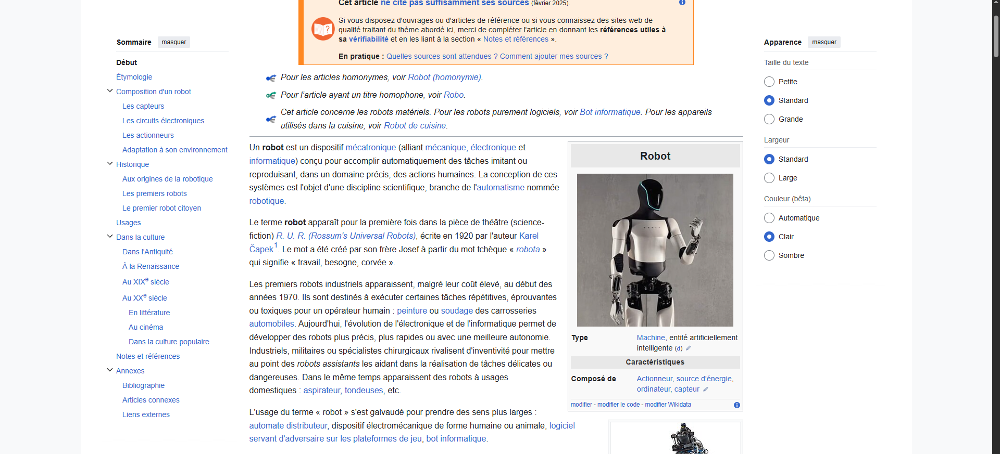
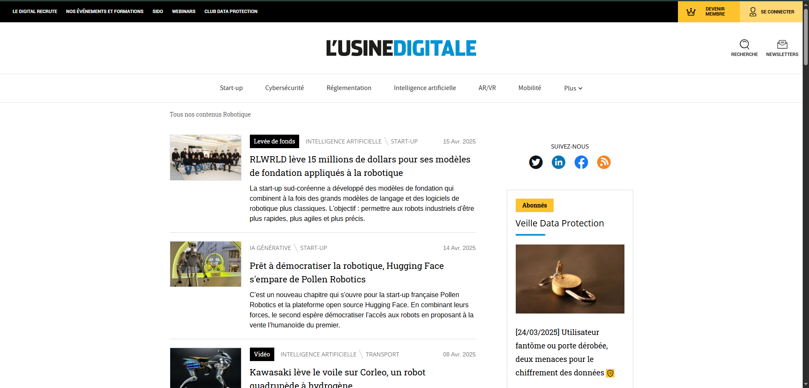
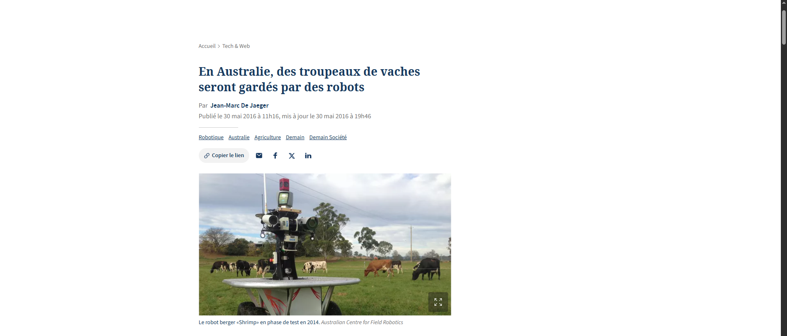
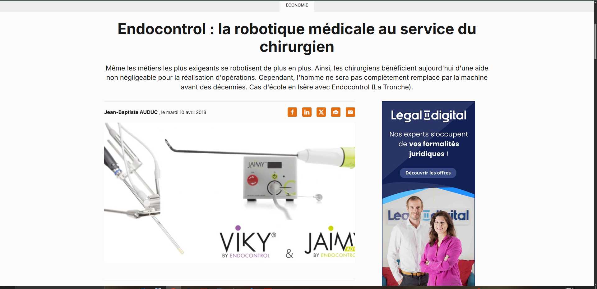
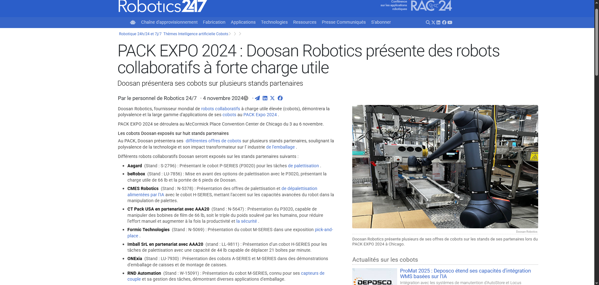
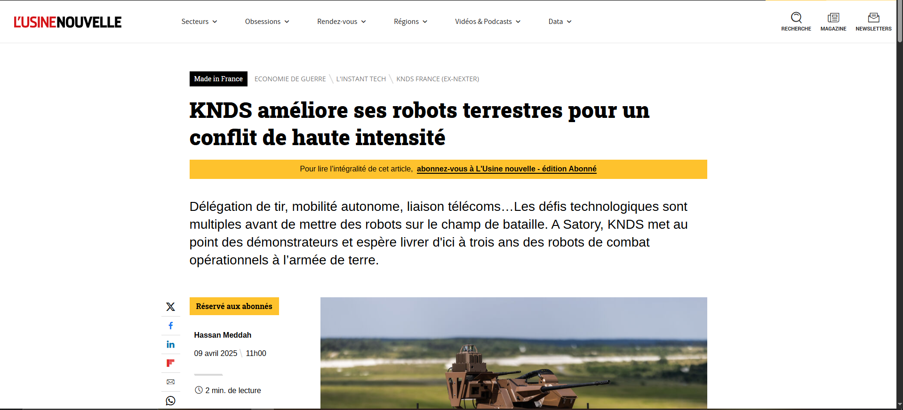
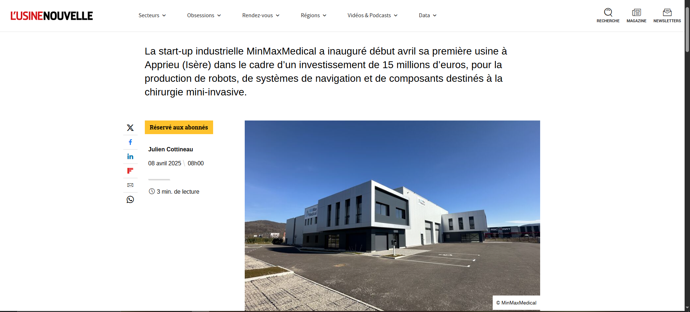

Exemples Visuels








Robotique et Matériels Robotisés : Tendances, Avantages et Défis
La robotique connaît une accélération notable, portée par l’intégration de l’intelligence artificielle, l’essor des cobots et l’émergence de technologies innovantes telles que la robotique molle et les exosquelettes. En 2024–2025, les systèmes robotisés s’étendent dans de nombreux secteurs – industrie, santé, agriculture, logistique – et s’inscrivent dans la dynamique de l’Industrie 4.0, connectant humains, machines et données pour optimiser la production.
Les cobots, conçus pour travailler en sécurité aux côtés des opérateurs, améliorent l’ergonomie et la flexibilité des lignes de production. L’intégration de l’IA permet d’optimiser la maintenance prédictive et le contrôle qualité.
Dans le domaine médical, des innovations françaises renforcent la précision des interventions chirurgicales et la rééducation. Les exosquelettes assistent tant en milieu industriel qu’en rééducation, en augmentant la force et en prévenant les troubles musculosquelettiques.
Utilisant des matériaux flexibles (silicone, hydrogels, polymères), la robotique molle offre une adaptabilité supérieure pour des interactions délicates avec l’humain et ouvre la voie à des systèmes auto-réparables et inspirés de la nature.
Des robots collaboratifs interviennent dans l’assemblage, la soudure et le contrôle qualité, permettant des lignes de production flexibles et optimisées par l’IA.
Les robots mobiles autonomes (AMR) optimisent la manutention et la gestion des stocks, améliorant ainsi l'efficacité de la chaîne logistique.
Les exosquelettes et robots chirurgicaux offrent des interventions moins invasives et des thérapies de rééducation prolongées, améliorant la qualité des soins.
Les avancées en IA, en matériaux auto-réparateurs et en robotique molle devraient rendre les systèmes toujours plus autonomes et interconnectés. L’intégration de ces technologies dans l’Industrie 4.0 ouvre la voie à des productions personnalisées, flexibles et écoénergétiques, transformant radicalement l’environnement de travail.
L’automatisation réduit certains postes, mais ouvre de nouvelles opportunités dans la gestion et le développement de solutions technologiques.
Une forte dépendance aux systèmes automatisés nécessite une gestion rigoureuse des risques et des cybermenaces.
La mise en œuvre d’automatisations avancées requiert des ressources en développement et en formation pour intégrer efficacement les nouveaux systèmes.






